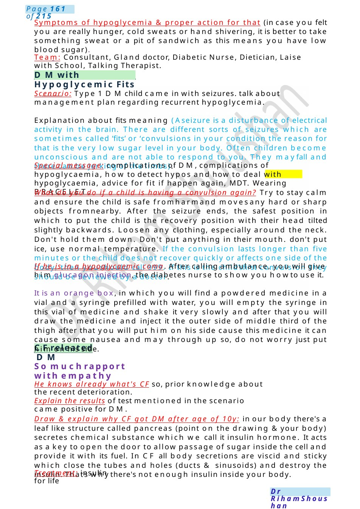

CFreleated DM
Symptoms of hypoglycemia & proper action for that (in case you felt you are really hunger, cold sweats or hand shivering, it is better to take something sweat or a pit of sandwich as this means you have low blood sugar). Team: Consultant, Gland doctor, Diabetic Nurse, Dietician, Laise with School, Talking Therapist.
Scenario Summary
Symptoms of hypoglycemia & proper action for that (in case you felt you are really hunger, cold sweats or hand shivering, it is better to take something sweat or a pit of sandwich as this means you have low blood sugar). Team: Consultant, Gland doctor, Diabetic Nurse, Dietician, Laise with School, Talking Therapist.
Full Original Scenario

DMwith Hypoglycemic Fits
CFreleated DM
Symptoms of hypoglycemia & proper action for that (in case you felt you are really hunger, cold sweats or hand shivering, it is better to take something sweat or a pit of sandwich as this means you have low blood sugar).
Team: Consultant, Gland doctor, Diabetic Nurse, Dietician, Laise with School, Talking Therapist.
Scenario: Type 1 DMchild came in with seizures. talk about management plan regarding recurrent hypoglycemia.
Explanation about fits meaning (Aseizure is a disturbance of electrical activity in the brain. There are different sorts of seizures which are sometimes called ‘fits’ or ‘convulsions in your condition the reason for that is the very low sugar level in your body. Often children become unconscious and are not able to respond to you. They mayfall and there can be jerking of the limbs).
Special message: complications of DM,complications of hypoglycaemia, how to detect hypos and how to deal with hypoglycaemia, advice for fit if happen again, MDT. Wearing BRACELET.
What do you do if a child is having a convulsion again? Try to stay calm and ensure the child is safe fromharmand movesany hard or sharp objects fromnearby. After the seizure ends, the safest position in which to put the child is the recovery position with their head tilted slightly backwards. Loosen any clothing, especially around the neck. Don't hold them down. Don't put anything in their mouth. don't put ice, use normal temperature. If the convulsion lasts longer than five minutes or the child does not recover quickly or affects one side of the body, then youshould call 999. If this is the child’sfirst convulsion they should be reviewed by a doctor.
If he is in a hypoglycaemic coma. After calling ambulance, you will give him glucagon injection, the diabetes nurse to show you howto use it.
It is an orange box, in which you will find a powdered medicine in a vial and a syringe prefilled with water, you will empty the syringe in this vial of medicine and shake it very slowly and after that you will draw the medicine and inject it the outer side of middle third of the thigh after that you will put him on his side cause this medicine it can cause some nausea and may through up so, do not worry just put him on his side.
So muchrapport with empathy
He knows already what's CF so, prior knowledge about the recent deterioration.
Explain the results of test mentioned in the scenario came positive for DM.
Draw & explain why CF got DM after age of 10y: in our body there's a leaf like structure called pancreas (point on the drawing &your body) secretes chemical substance which we call it insulin hormone. It acts as a key to open the door to allow passage of sugar inside the cell and provide it with its fuel. In CF all body secretions are viscid and sticky which close the tubes and holes (ducts & sinusoids) and destroy the insulin. Thats whythere's not enough insulin inside your body.
Treatment: insulin for life

Insulin Regimes
follow up.
Any alternatives like tablets mygrandfather is taking? I am so sorry, there is no alternative &you cannot take tablets because nowyour body needs insulin from outside.
Team: CFteam, gland doctor, Diabetic nurse, Dietician, psychologist, liaise with school.
Advice: regarding how to detect hypos &how to deal with that, proper diet and exercise with regular
Explanation: about the different types of insulin. they are four, and these insulin types different in onset and duration of action, wehave rapid acting, short acting, intermediate acting and long acting, Onset of action of them, 15 min, 30 min, 2 H, 1 H, Duration of action of them, 3 H, 6 H, 12 H, 24 H.
Types of different insulin regimes and types of insulin used in each type:
1. Basal bolus, weuse rapid acting and long acting, the child will take one shot of long acting and 3 shots of rapid acting before mealtimes. it mimics what usually happen in our body, where we have base line of insulin and surge of insulin at time of meals, so it is more physiological. also, it can be used in toddlers and young children in whom feeding pattern cannot be predicted.but being four shots a day and child must take it in the school make it annoying for adolescents.
2. The twice daily regime : we are using the short acting and intermediate acting, to give two third of dose in the morning and one third at the evening. Twoshots and no need to be taken at school but, it is less physiological, cannot be used in toddlers and young children whom feeding pattern cannot be predicted, more liable to hypos and need frequent snacks.
3. Insulin pump: It is the best regimen ever as it results in precise sugar control, It is computerized SCdevice, pumping insulin 24 Hper day via a catheter put under pt clothes , it is filled with rapid acting insulin &the child should have to put the data about sugar level and the amount of carbs he need to eat , the pump will calculate the needed dose of insulin and inject it. Insulin pumpcan measure blood sugar manytimes a day, but any device had benefits and risks.
Advantages are the better control of blood glucose we do not want to inject as often, fewer risk of higher and lowers, when you exercise you have mor flexibility with what, when and howmuch you eat, better accuracy when you are bringing downhigh sugar levels.
Disadvantages: pump failure, increasing DKArisk, pump attached all the time to body, only taken off for small breaks during swimming or showering causing psychological impact, take a lot of time to learn, risk of infection from canula.